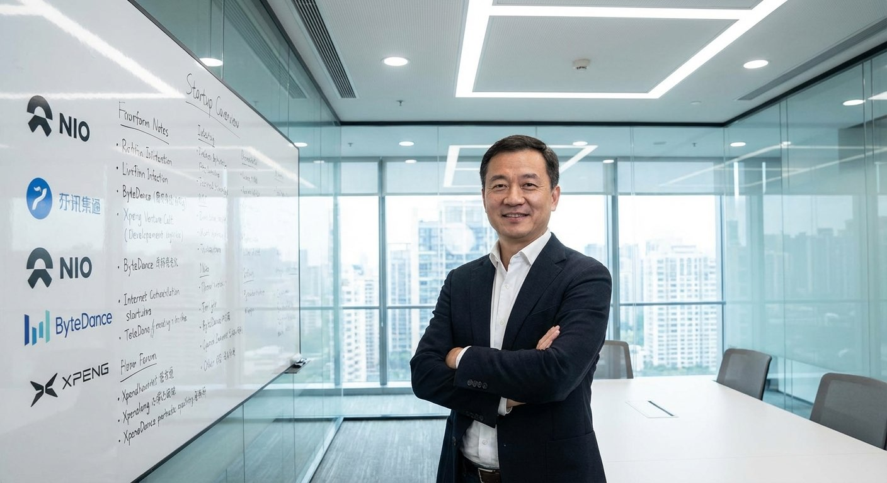
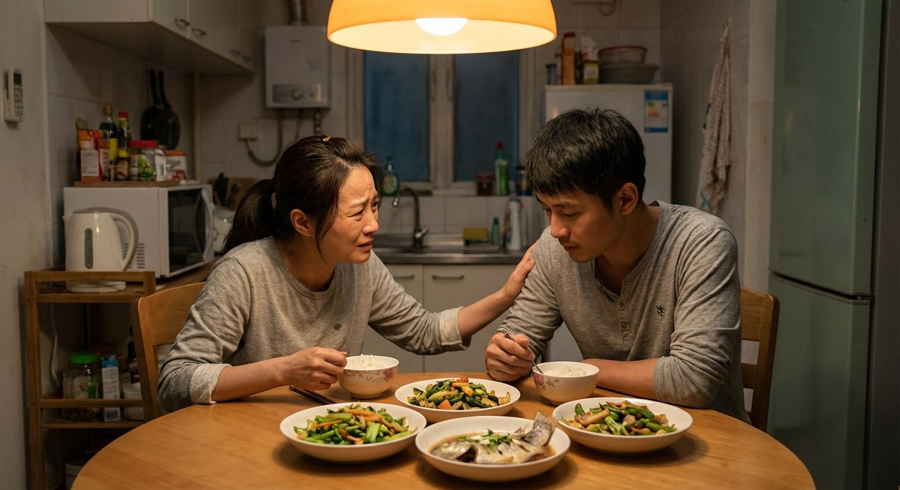

去年3月从字节离职，拿了N+3的赔偿金，47万，就这么上路了。
前3个月烧了23万，0用户。每天在家改代码改到凌晨3点，我妈以为我在打游戏。
第4个月来了第一个付费用户，¥99/月。我截图发了个朋友圈，收到了142个赞。那天比我在字节拿年终奖还开心。
现在第12个月了。月收入¥38,000，比之前工资少了一半。但每天早上我是自己醒的，不是闹钟叫醒的。
来说说失败的体验。
2025年4月出来，做AI客服。融了200万天使轮，6个月烧完。
原因？大模型API成本降得太快。我花3个月开发的功能，GPT-5一个API调用就实现了。
最惨的时候，卡里只剩¥1,847。房租¥4,500，下个月的还没着落。
今年1月回了美团，工资涨了30%。领导跟我说："你出去走了一圈，眼界不一样了。"
所以……也不算完全失败吧？

投资人视角说几句。
2025年我看了600+个AI项目BP，投了12个，目前活着的8个。
一个规律：活下来的创始人有个共同点——不是技术最强的，是最能扛的。
有个创始人，产品上线第一天0用户，他挨个打了200个电话，第二周有了47个种子用户。现在月活12万。
另一个技术大牛，论文被引3000+，产品做了半年一直在实验室打磨。烧完钱也没上线。
创业不是做科研，是做生意。

我老公去年辞职做AI创业，我来说说家属的体验。
月收入从¥45,000变成¥0。房贷¥12,000/月还得照付。
他每天在家，但比上班的时候见面更少。凌晨2点还在客厅敲代码，我醒了去倒水，他头都不抬。
吵过3次大架，2次是因为钱，1次是因为他答应带我吃饭又爽约。
但上个月，他拿到了第一笔大客户的¥15万合同。回到家的时候，这个185的大男人抱着我哭了。
那一刻我觉得，还好当初没拦他。
我和题主说的那种人是前同事。他离职那天，部门47个人，30个说他疯了，12个说佩服，5个偷偷问他还招不招人。
现在他创业第10个月了。朋友圈里不是凌晨的代码截图，就是和客户吃的快餐。
说不羡慕是假的。我每天打卡上班、开会、写周报，拿着¥35,000的稳定工资，但总觉得少了点什么。
上周见了一面。他瘦了15斤，但眼睛里有光。
那种光我在公司里从来没见过。
谢谢大家。上面的回答里，有我的合伙人、我的投资人、我老婆、我前同事、还有一个"失败版"的我——就是如果我在第6个月放弃的话。
真实数据：创业12个月，换了3个方向，见了58个投资人，被拒了46次。
现在团队5个人，月营收¥82,000，还在亏。
但每天早上打开电脑，我知道今天做的事情是我选的。
这种体验，叫自由。
数字不好看，但我每天都在做自己相信的事。这个答案够不够？